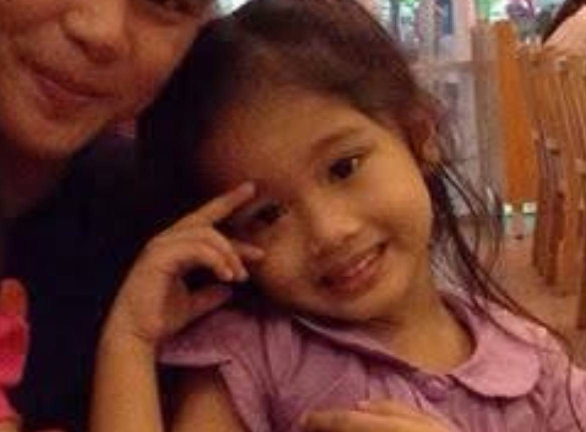

Our Moments

I know i've said this multiple times na, pero i really want to thank you for making my life so much brighter ever since u came.U make it better just by being in it. I know you think of yourself as someone na hindi enough, pero u're more than enough for me baby.
You are such a sweet and kind soul, someone whose presence has quietly but powerfully changed the way I see the world. You've made me fall in love again with so many things I once thought were ordinary or dull. You breathed life back into the parts of me I had forgotten, and in doing so, you helped me rediscover the quiet beauty in simply existing. One of the most precious things you've helped me relove is life itself, babi. Something that once felt heavy, overwhelming, or even tiring now holds light again, simply because you're in it.
Thank you for being my safe space, my pahinga, especially in moments when everything feels too loud or too much. When the world becomes a storm, your presence is my calm. You don’t even have to say anything; just knowing you're there is enough to help me breathe a little easier. It's a kind of peace I never knew I needed until I found it in you.
Just a little reminder in case the day feels heavy or ordinary: you are someone truly rare in this world. Your laugh, your kindness, the way you care so deeply even in small things—it all brings so much light to the people around you, especially me. I know life isn’t always soft, but having you in it makes even the hard days feel worth showing up for.
You don’t always see how amazing you are, but I do. I see it in the way you love, the way you try, the way you continue showing up with your heart open. You are magic in human form. And I'm so lucky I get to walk through life with you—on the good days, the bad ones, and all the ordinary moments in between.
You are more than enough. You are deeply loved. And I hope today wraps around you like a hug that says, “You matter. You're doing just fine. And you’re never alone.”
Always here. Always proud of you.
You’re honestly one of the most amazing people I’ve ever known. You’re so close to God, and it shows in the way you live, speak, and treat people. Being around you reminds me to slow down and trust more, to have faith even when things get hard. You don’t push it pero you just live it, and that’s what makes it so powerful.
At the same time, you’re also one of the funniest people I know. You make me laugh in the most unexpected moments, and I love that about you. You’re light, you’re real, and you never try too hard. You just are, and that’s more than enough.
I also admire how close you are to your parents. The way you respect them and love them so deeply makes my heart full. It says so much about the kind of person you are—caring, grounded, and full of love.
Honestly, you influence me more than you probably realize. Because of you, I’ve started seeing the good more often. I’ve started trying to be better, to be kinder, to choose what’s right. You help me grow in such a gentle way, just by being yourself.
You really are something special. Just thought you should know.
I fell in love with you the moment I really saw you. Your brown eyes caught me right away. There’s something about them bebe like warm, calm, and full of depth. Like they hold so much more than what you say out loud. They made me want to stay, to learn everything about you.
And your smile that shows up when you're trying not to laugh too hard. It's honestly one of the best things I've ever seen. I still catch myself staring when you smile, like I’m seeing it for the first time.
Your hair too. Long and soft, the way it moves when you turn your head or run your fingers through it. Sometimes you say it’s messy, but it always looks perfect to me. It just fits you.
And your laugh—especially that funny, cautious one you do when something catches you off guard or when you're trying to hide it. That laugh makes me want to hear it over and over. It’s the kind of sound that sticks with me, even after we’re apart.
You’re beautiful in a way that’s so natural and real. You didn’t have to do anything extra. I saw you, and I fell..
I’m so proud of you, bebi. Seeing how hard you work and how much you’ve achieved as an academic achiever just blows me away. You always push yourself to be the best, and it shows. But I also want you to remember to take some rest, oki po? You deserve to slow down and breathe sometimes.
You inspire me every day to be better po not just in school or work, but in life too. Because of you, I want to keep growing and improving. You don’t even realize how much of a positive impact you have on me.
So please, don’t forget to take care of yourself as much as you take care of everything else. I’m here cheering for you always, and I’m proud of everything you’ve done and everything you will do.
Happy anniversary, bebii! I can’t believe how far we’ve come and all the memories we’ve made together. Every day with you feels like a gift. You bring so much joy and light into my life, and I’m so thankful to have you by my side.
Through the good times and the tough moments, we’ve stood strong together. You’ve shown me what true love and partnership really mean. I love how we laugh until our stomachs hurt, support each other no matter what, and keep growing as individuals and as a team.
You’ve become such an important part of my life—my best friend, my comfort, and my biggest motivation. I’m proud of everything you are and everything we are building together.
i know po that we’re just starting this long-distance thing and it can feel a little scary or uncertain at times. But I want you to know how much I believe in us. Even though we’re apart right now, it doesn’t change how much I care about you or how much I want us to work.
Distance can be tough, and it’s normal to feel nervous about what’s ahead. But I feel lucky to have you in my life, and I’m ready to keep growing with you no matter where we are. What matters most is that we keep trusting each other and keep being honest about how we feel. That’s what will keep us strong.
I think this is just the beginning of something really special. Every day I learn more about you, and it makes me even more sure that what we have is worth it. Even though we’re not close right now, I carry you with me all the time—in my thoughts, in my heart.
I’m proud of us for starting this journey together. I know it won’t always be easy, but I also know we can handle whatever comes our way as long as we have each other. I love you, and I’m excited for everything we have ahead of us.
Happy anniversary po, love! Grabe, ang saya ko na makarating tayo sa araw na to, kasama ka sa buhay ko. Lahat ng moments na pinagsamahan natin, mula sa tawanan hanggang sa mga challenges, ang laki ng naitulong satin para mas maging masaya at mas mabuting tao.
Alam mo bebe, sobrang importamt ka sa akin. Yung kindness mo, tapang mo, at yung pagiging andyan mo palagi para sa akin—hindi ko po makakalimutan. Hindi lang tayo nag-grow bilang mag-partner, kundi bilang mga tao rin, at yun ang pinaka-importanteng bagay sa akin.
Hindi po perfect palagi ang lahat, pero dahil sa’yo, ramdam ko na worth it lahat ng pinagdadaanan natin. Excited na me sa future natin, sa mga bagong memories na gagawin natin. Basta tandaan mo po, andito lang ako, committed at ready na harapin ang lahat kasama ka.
Maraming salamat po sa pasensya, sa pang-unawa, at sa pagiging ikaw.
Mundo - Our Song